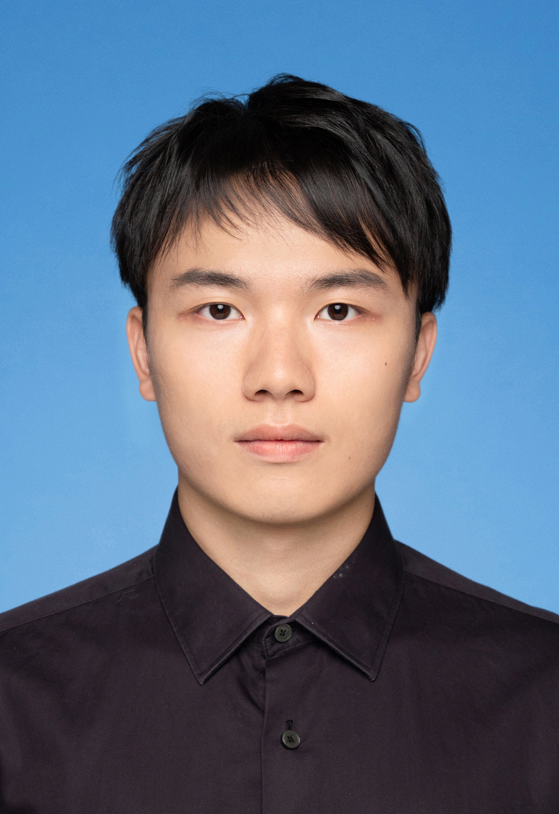

字节跳动 · 飞书视频会议后端开发工程师
- 建设声纹 Autoresearch 实验闭环，沉淀固定评测集、数据缓存、指标门禁和可复现实验记录。
- 实现 SCD 合并策略，内部评测正确率提升 1.17pp，漏检占比降低 1.18pp。
- 建设同说话人验证判别系统，替代人工标注声纹训练信息，系统覆盖率约 40%，准确率 99%+。
- 开发妙记内容导入 RTTM 标注平台接口，将整理耗时从数小时压缩到分钟级。
上海大学计算机科学与技术本科在读，关注 AI 工具开发、后端工程化、音视频会议数据链路、声纹识别评测闭环、文档理解和检索系统。实习和项目中，我习惯把模型能力放进可复现、可评测、可维护的工程流程里。

我主要做后端接口、数据链路、算法工程化和 AI 应用落地。近期在飞书视频会议相关实习中参与会议数据拉取、音频处理、声纹识别链路优化、模型服务封装和统一评测平台接入，也在个人项目中实践过向量检索、关键词检索、文档理解和结构化抽取。
构建贯通 CLI 与飞书群聊的团队知识引擎，实现 27 个 FastAPI 接口、27 个 Typer 子命令及 SQLite + ChromaDB 双库架构，完成 237 个 Pytest 用例，通过率 99.6%。
融合 BGE-M3 向量检索与关键词检索（RRF），结合 6 维排序策略实现 p50 延迟 12ms、Hit@1 100%；基于 Qwen3-VL-8B-Instruct 完成群聊意图分类与结构化决策抽取。
集成 doclayout_yolo、YOLOFD、UniMERNet、PaddleOCR 等模型，实现图像/PDF 到 Markdown/JSON 的结构化转换。
设计统一 JSON Schema、空间对齐策略和多阶段推理 Pipeline，融合布局块、公式与文本输出，提升解析结果可读性和稳定性。
我会先用 Plan 模式让 AI 通读项目、拆解方案和风险点，确认整体路径后再进入实现。遇到目标较大的功能，会把任务拆成多个阶段，把计划沉淀到文档中，再用 Goal 模式逐步推进，最后由我做架构判断、关键代码审查和结果验收。
在声纹 Autoresearch 中，我负责定义研究目标、线上约束、评测指标和晋级规则；Botmux 负责任务编排、心跳监控和异常通知；TraeX 在独立 Git worktree 中并行完成算法实现、测试与实验。固定评测集、数据缓存、指标门禁和可复现实验记录，让实验能复跑、对比和回滚。